| Título do Projeto | Classificação de Glitches em Dados do LIGO com CNNs e Análise de Interpretabilidade (Projeto 3 – Ondas Gravitacionais) |
| Grupo de Pesquisa | PIC Astronomia |
| Período Abrangido | Setembro – Outubro de 2026 |
| Versão / Data | V2 – 07/10/2026 (substitui o relatório de 27/09/2026) |
| Estágio do Cronograma | Refinamento (M12–M16) – reaberto após auditoria do pipeline; a fase de redação (M16–M20) fica condicionada aos itens da seção 10 |
| Alvo de Publicação | Classical and Quantum Gravity (CQG) ou Research Notes of the AAS (RNAAS) |
O projeto treina uma ResNet-18 no conjunto Gravity Spy (22 classes) e a aplica a eventos reais do catálogo GWTC. Esta versão registra uma auditoria completa do código e dos resultados do relatório V1, que encontrou três defeitos de pipeline com impacto direto nas conclusões:
Com os três defeitos corrigidos, o comportamento da rede muda qualitativamente: o Grad-CAM mostra que a rede olha diretamente para o glitch ou o sinal, e nos dados reais ela passa de 2 para 15 classes previstas, reconhecendo como Chirp, com confiança acima de 95%, os eventos mais intensos do catálogo (GW150914, GW170814, GW190521_074359, GW190630 etc.). Por outro lado, os resultados de dados reais do V1 (38 discordâncias “Extremely_Loud × None_of_the_Above” e o estudo de caso GW151012) não se sustentam, e todos os 150 canais ainda ficam acima do limiar de detecção fora de distribuição (OOD). O projeto não está pronto para a redação; está numa posição metodologicamente muito mais sólida para chegar lá.
Além disso, o filtro casado do kit didático (gw_student_kit) foi corrigido (PR #1, Daniel Tedesco): ele produzia SNRs da ordem de 1011 e agora dá ρ ≈ 10,8 para o GW150914 no detector L1, no instante correto da fusão (seção 6.5).
Os interferômetros LIGO Hanford (H1) e Livingston (L1) são afetados por transientes instrumentais (glitches) que podem mascarar ou imitar sinais de ondas gravitacionais. A classificação automática desses transientes é parte da caracterização de qualidade dos dados.
| Etapa | Objetivo | Procedimento / Resultado | Decisão |
|---|---|---|---|
| 1. Ambiente | Estabilizar o pipeline | NumPy 1.26.4 / SciPy 1.11.4, PyTorch 2.5.1 + CUDA 12.1, OpenCV < 4.10, ambiente conda gw. | Concluído |
| 2. Treino multiseed | Robustez estocástica | 5 seeds (11, 23, 42, 71, 101); macro-F1 0,856 ± 0,006 (seção 6.1). | Modelo estabelecido |
| 3. Discordâncias (V1) | Aplicar ao GWTC | 38 eventos com discordância entre detectores; só 2 classes previstas. | Invalidado (defeitos 1 e 3) |
| 4. Grad-CAM (V1) | Interpretabilidade | run_gradcam.py com hook em layer4[-1].conv2. | Corrigido (defeito 2) |
| 5. “Silhueta” (V1) | Testar viés de borda | Interpretação baseada em cores invertidas. | Descartado |
| 6. GW151012 (V1) | Estudo de caso | Conversão ad hoc .npy → .png com pré-processamento diferente do oficial e eixos trocados. | Invalidado |
| 7. Auditoria | Conferir V1 contra o repositório | Revisão de código, saídas e contas; identificação dos defeitos 1–3. | Concluído |
| 8. Correção da orientação | Eixos corretos | Parâmetro layout="gwpy"; testes com GW150914 (pico em t ≈ +0,016 s, ≈ 160 Hz). | Concluído |
| 9. Correção de cores | Grad-CAM legível | Conversão BGR → RGB; figuras refeitas. | Concluído |
| 10. Escala Gravity Spy | Reduzir a diferença de domínio | render_mode="gravity_spy" como padrão; ensemble reprocessado. | Concluído |
| 11. Kit didático | Filtro casado com SNR correta | Normalização FINDCHIRP, template newtoniano, injeção pela SNR ótima (PR #1, Daniel Tedesco); 6 testes novos. | Concluído |
AMD Ryzen 5 5600G, 32 GB RAM, NVIDIA GeForce RTX 3060 (12 GB). Windows 11, ambiente conda gw (Python 3.12, PyTorch 2.5.1 + CUDA 12.1, torchvision 0.20.1, gwpy 3.0.14, NumPy 1.26.4, SciPy 1.11.4). O pacote ativo é src/gwproject (instalação editável).
trainingset_harmonized_20_512 (banda 20–512 Hz, janela de 1 s), divisões oficiais: 5586 treino / 1200 validação / 1179 teste.qrange = (4, 64), 20–512 Hz, janela de 4 s, branqueado, normalização pela mediana.ResNet-18 pré-treinada no ImageNet, com conv1 adaptada para um canal (stride 2) e sem maxpool; cabeça linear de 22 classes; AMP; perfil cuda_balanced (batch 32). Entrada 140 × 170 px em cinza, normalizada com Normalize([0.5],[0.5]) para [−1, 1].
Hooks em layer4[-1].conv2. Os pesos de cada filtro são a média espacial dos gradientes, αkc = (1/Z) Σij ∂yc/∂Akij; o mapa é Mc = ReLU(Σk αkc Ak). O ReLU atua sobre a soma ponderada, não sobre os gradientes. Como o modelo não tem maxpool, a redução espacial é de 16× e o mapa tem 9 × 11 células (140×170 → 70×85 → 35×43 → 18×22 → 9×11), interpoladas para o tamanho da imagem. Cores: escala JET convertida para RGB (vermelho = atenção máxima), sobreposição 60% imagem / 40% mapa.
Média das probabilidades dos 5 seeds; fração de votos do modelo vencedor; entropia e informação mútua. OOD por distância de Mahalanobis no espaço de 512 dimensões (referência construída com 1200 imagens de validação, seed 42; limiares q95 = 563 e q99 = 638) e por energia livre.
| Métrica (teste, 1179 amostras) | Média | Desvio | Mín. | Máx. |
|---|---|---|---|---|
| Macro-F1 | 0,856 | 0,006 | 0,846 | 0,863 |
| Acurácia balanceada | 0,844 | 0,010 | 0,831 | 0,856 |
| Acurácia | 0,909 | 0,004 | 0,904 | 0,914 |
| Kappa de Cohen | 0,900 | 0,004 | 0,894 | 0,905 |
As classes mais difíceis são No_Glitch (F1 0,47–0,56), 1400Ripples (0,50–0,64) e Paired_Doves (0,57–0,67). Chirp tem F1 = 1,00 em todos os seeds. No seed 42 (usado no Grad-CAM), a menor F1 é No_Glitch (0,526), e não 1400Ripples (0,600) como afirmava o V1. A matriz de confusão do seed 42 está na Figura 1; as dos demais seeds estão no Anexo C.
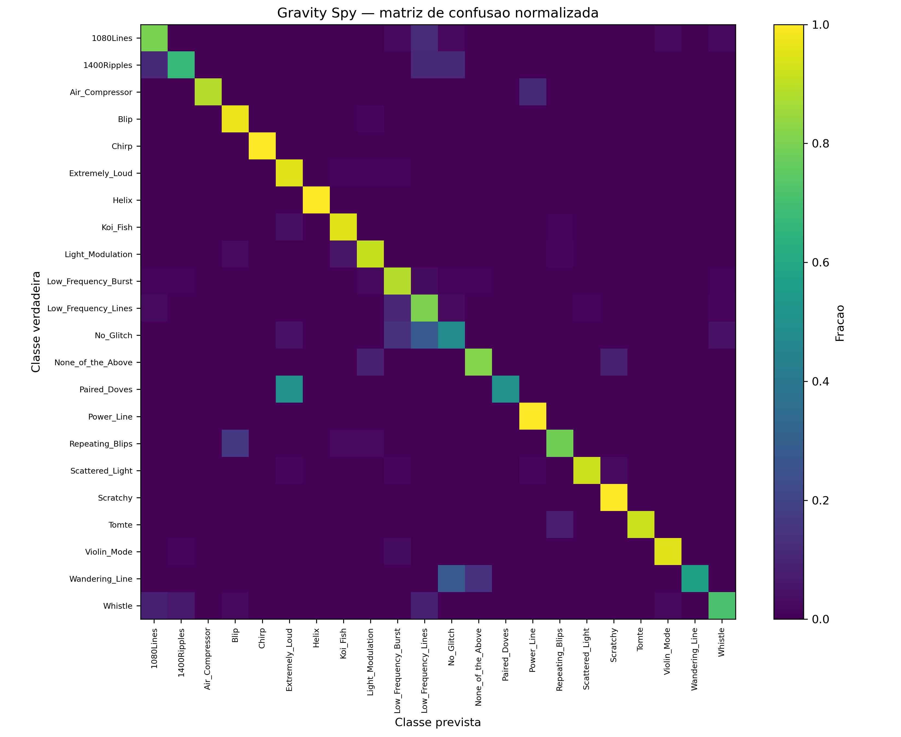
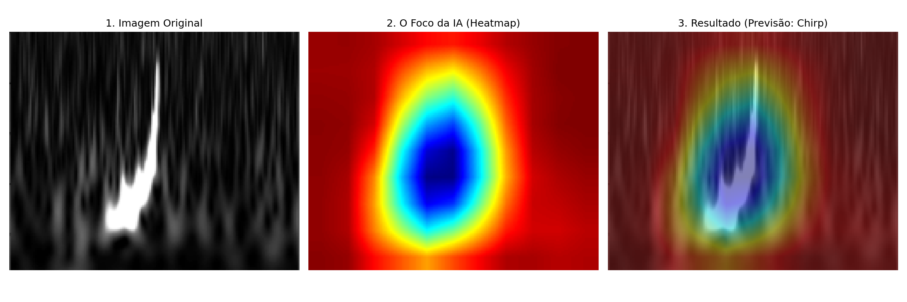
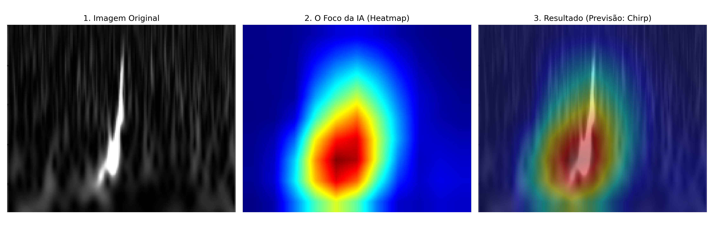
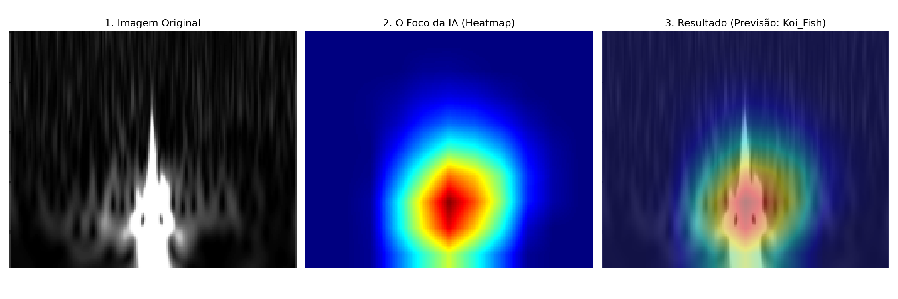
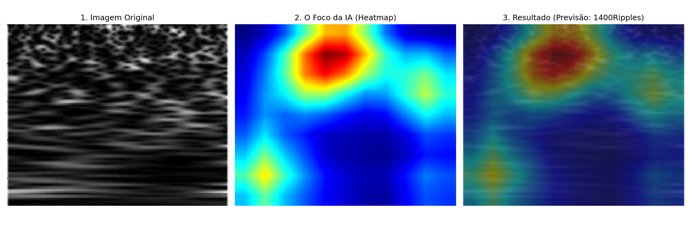
| Indicador (150 canais, 61 eventos) | V1 (transposto) | Transposição corrigida | Escala Gravity Spy |
|---|---|---|---|
| Classes distintas previstas | 2 | 2 | 15 |
| Canais classificados como Chirp | 0 | 0 | 34 |
| Eventos com discordância entre detectores (inclui V1) | 38 | 38 | 50 |
| Eventos com discordância H1 × L1 | 21 / 47 | 19 / 47 | 32 / 47 |
| Mediana da distância de Mahalanobis | 18 424 | 11 670 | 2 228 |
| Canais acima do limiar OOD q99 (638) | 150 | 150 | 150 |
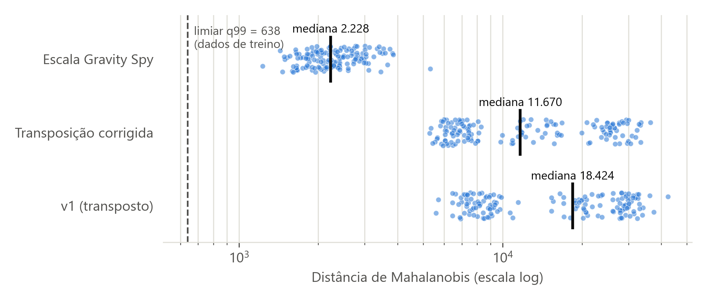
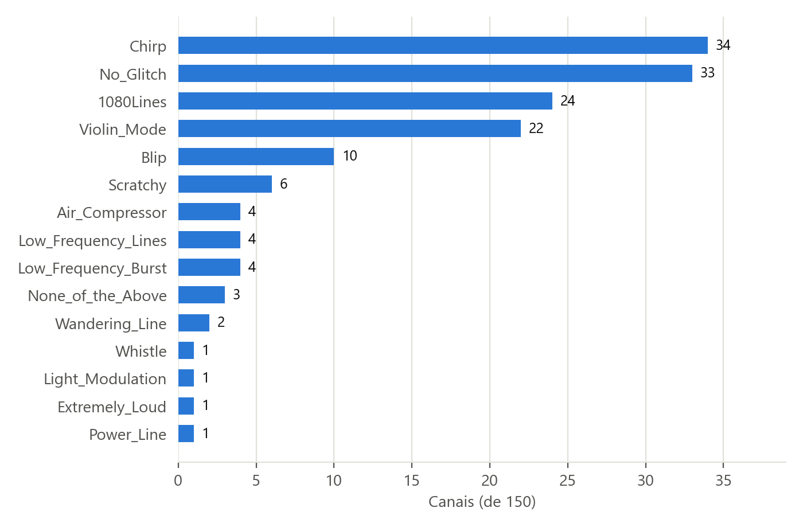
Controle positivo. Os 11 canais classificados como Chirp com confiança ≥ 0,95 (todos com 5/5 votos) pertencem a eventos reconhecidamente intensos:
| Evento | Detector | Confiança | Evento | Detector | Confiança |
|---|---|---|---|---|---|
| GW190521_074359 | L1 | 0,9999 | GW190910_112807 | L1 | 0,997 |
| GW170814 | L1 | 0,9990 | GW190828_063405 | L1 | 0,995 |
| GW190630_185205 | L1 | 0,9988 | GW200311_115853 | H1 | 0,986 |
| GW150914 | L1 | 0,9987 | GW170809 | L1 | 0,985 |
| GW190828_063405 | H1 | 0,9977 | GW190519_153544 | L1 | 0,981 |
| GW190727_060333 | H1 | 0,960 |
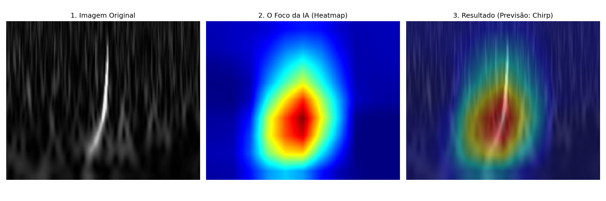
| Fonte | H1 | L1 |
|---|---|---|
| Relatório V1 (conversão ad hoc, eixos trocados) | Extremely_Loud | None_of_the_Above |
| Ensemble V1 (pipeline oficial, transposto) | None_of_the_Above (0,81) | Extremely_Loud (0,52) |
| Ensemble, transposição corrigida | None_of_the_Above (0,72) | None_of_the_Above (0,50; 2/5 votos) |
| Ensemble, escala Gravity Spy | Violin_Mode (0,64) | Scratchy (0,76) |
| Seed 42 isolado, escala Gravity Spy | 1080Lines | Scratchy |
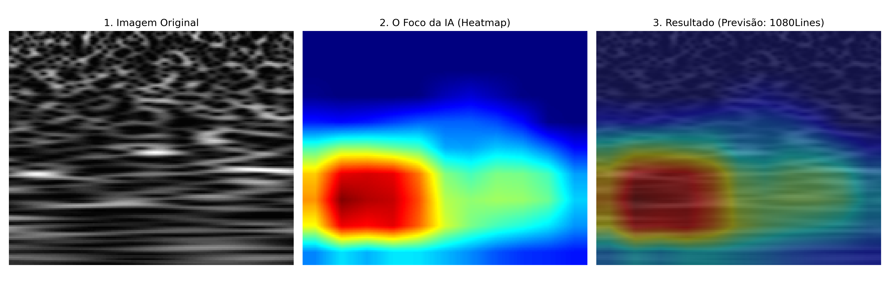
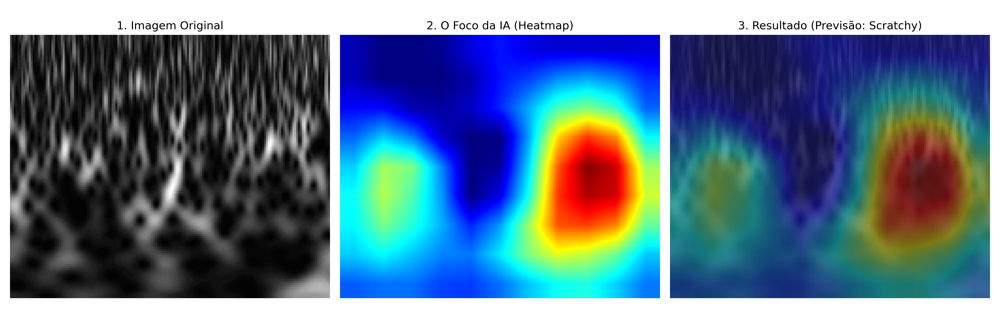
O GW151012 é um evento de baixa significância. O filtro casado do próprio projeto obtém SNR de rede de 5,5 e reprova nos critérios de detecção (o valor publicado é ≈ 10). Nenhuma das versões mostra um glitch claro em H1 com L1 “limpo”, e a classificação muda conforme a renderização e o seed. A conclusão do V1 – “a IA isolou cirurgicamente um defeito no H1 e atestou a limpeza do L1” – não se sustenta. Também não há registro conhecido de glitch que tenha “sufocado” o sinal em H1, e o atraso máximo entre H1 e L1 é de ~10 ms, não “no milissegundo seguinte, em continente distinto”.
O gw_student_kit é um kit independente do pacote gwproject, usado para ensinar filtragem, espectrogramas e filtro casado. A versão anterior produzia SNRs sem sentido físico: ~1,6 × 109 na demonstração sintética e ~1,1 × 1011 no GW150914, com o pico fora do instante do evento. A correção, de autoria de Daniel Tedesco (PR #1, mesclado em 10/10/2026), atacou quatro causas:
align_to_merger faz a conversão.O template passou a ser um chirp de ordem dominante (“newtoniano”) calculado a partir da massa de chirp no referencial do detector, e o kit ganhou leitura dos arquivos HDF5 oficiais do GWOSC e semente fixa para o ruído sintético.
| Verificação (reproduzida localmente) | Resultado |
|---|---|
| ⟨ρ²⟩ em ruído gaussiano (valor teórico 2) | ≈ 2 (teste automatizado) |
| Demonstração sintética, ρ ótima injetada = 14, semente 2026 | ρ = 12,91 no instante da injeção (3,000 s); parte do chirp fica fora de 30–400 Hz |
| GW150914, L1, 𝓜 = 30,69 M☉ (detector) | ρ = 10,80, fusão em +16,021 s |
| GW151012, L1, 𝓜 = 18,72 M☉ | ρ = 5,29, fusão em +16,046 s |
| GW151012, H1 | pico global ρ = 5,04 em +1,8 s, no ruído (sem detecção) |
| Suíte de testes do projeto | 66 testes passando (6 novos para o kit) |
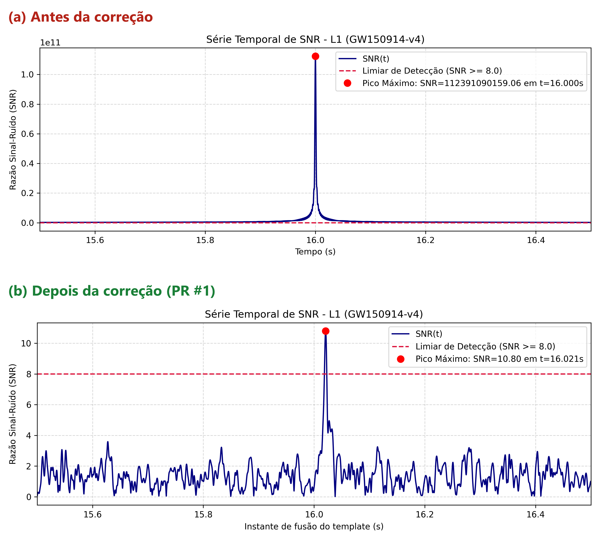
gwproject (seção 8).| Decisão | Justificativa | Estado |
|---|---|---|
Layout gwpy (transpor Q-grams) | O gwpy grava (tempo, frequência); verificado com o pico do GW150914. Protegido por teste automatizado. | Em uso |
| Renderização “gravity_spy” como padrão | Reproduz a escala das imagens de treino; reduz a distância OOD em ~8× e recupera o controle positivo. A renderização por percentis continua disponível (render_mode = "percentile"). | Em uso |
| Grad-CAM em RGB | Corrige a troca de cores; vermelho = atenção máxima. | Em uso |
| Normalização [−1, 1] | Mantida, igual ao treino. A interpretação “molde de contraste” associada a ela no V1 foi descartada. | Em uso |
| Ensemble de 5 seeds + OOD | Reduz a dependência de um único modelo (o GW151012 mostra divergência entre seed 42 e ensemble). | Em uso |
| Kit didático com normalização FINDCHIRP | SNR fisicamente interpretável (ρ² ~ χ²₂ em ruído); comportamento protegido por 6 testes. | Em uso |
| Figuras V1 arquivadas | Mantidas em outputs/research/gradcam_legacy_bgr/ para rastreabilidade. | Concluído |
| Item | Status | Observações |
|---|---|---|
| Configuração e banco de dados (M4) | Concluído | Gravity Spy harmonizado; 61 eventos GWTC, 150 canais. |
| Treino da rede (M12) | Concluído | 5 seeds, macro-F1 0,856 ± 0,006. Não precisa ser refeito. |
| Pipeline de Q-grams reais | Corrigido | Orientação e escala corrigidas; 66 testes automatizados passando. |
Kit didático (gw_student_kit) | Corrigido | Filtro casado com SNR correta (PR #1); figuras refeitas. |
| Interpretabilidade / viés (M16) | Em andamento | Qualitativo coerente; faltam testes quantitativos. |
| Análise GWTC / OOD | Em andamento | Controle positivo recuperado; diferença de domínio ainda aberta. |
| Estudo de caso GW151012 | Revogado | Conclusão do V1 não se sustenta. |
| Redação (M20) | Pendente | Condicionada aos itens de curto prazo da seção 10. |
layer3 e Grad-CAM++, e injeção de seno-gaussianas em (t, f) conhecidos.A auditoria encontrou três defeitos que, somados, produziram as principais conclusões do relatório V1: a “Detecção por Silhueta” era um artefato de cores trocadas, e o padrão “Extremely_Loud × None_of_the_Above” nos dados reais era consequência de imagens transpostas e de uma escala de intensidade diferente da do treino. Corrigidos esses pontos, o quadro é mais modesto e mais confiável: a ResNet-18 treinada tem bom desempenho no Gravity Spy (macro-F1 0,86), concentra a atenção no próprio transiente e, aplicada aos dados reais com a renderização correta, reconhece os sinais mais intensos do catálogo como Chirp. A transferência para dados reais ainda não está validada, porque todos os canais continuam fora do domínio pelo critério de Mahalanobis. Fechar essa lacuna e executar os controles positivos e negativos são as condições para iniciar a redação científica.
| Afirmação no V1 | Correção |
|---|---|
| “A rede foca no espaço vazio; detecção por silhueta / molde vazado” | Artefato de cores BGR/RGB; a atenção máxima está sobre o transiente. |
| “O cálculo (−5 × −1,0) gera ativação máxima … não há viés” | Exemplo de uma única camada, sem relação com o mapa da layer4; argumento descartado. |
| “ReLU forçando derivadas negativas a zero” | O ReLU atua sobre ΣαkAk. |
| Sobreposição com 50% de transparência | 60% imagem / 40% mapa. |
| 1400Ripples é a classe de menor F1 | Verdadeiro em 2 de 5 seeds; no seed 42 é No_Glitch. |
| 38 eventos com discordância H1 × L1 | 38 de 61 eventos com discordância entre quaisquer detectores (inclui Virgo); H1 × L1: 21 de 47. |
| “100% das falhas opõem Extremely_Loud e None_of_the_Above” | Trivial: só essas duas classes eram previstas, por causa dos defeitos de pré-processamento. |
| GW151012: H1 Extremely_Loud, L1 None_of_the_Above | O ensemble oficial dava o inverso; com o pipeline corrigido: H1 Violin_Mode, L1 Scratchy. |
| None_of_the_Above = “ambiente limpo” | A classe limpa é No_Glitch; None_of_the_Above é um glitch fora das demais classes. |
| “No milissegundo seguinte, em continente distinto” | H1 e L1 observam a mesma janela, com atraso máximo de ~10 ms. |
| Chirp = “física real” | Classe morfológica do Gravity Spy, não garantia de origem astrofísica. |
| Artefato | Local |
|---|---|
| Correções de código | src/gwproject/qgram_inference.py (layout, render_mode), scripts/run_gradcam.py, scripts/temp_npy_to_png.py, scripts/classify_catalog_qgrams*.py |
| Configuração | configs/research_program.toml e configs/catalog_analysis.toml (flip_frequency = true, render_mode = "gravity_spy") |
| Testes | tests/test_qgram_orientation.py, tests/test_student_kit.py (suíte completa: 66 testes passando) |
| Ensembles | outputs/research/gravity_spy_ensemble (V1), …_fixed, …_gsrender (atual) |
| Grad-CAM | docs/figuras/gradcam_*.png, outputs/research/gradcam_fixed/, outputs/research/gradcam_legacy_bgr/ |
| Kit didático | gw_student_kit/matched_filter.py, synthetic.py, main_demo.py; figuras em gw_student_kit/results/ |
| Figuras deste relatório | outputs/research/report_v2/ |
Amostras de treino usadas nas Figuras 3–5: Chirp/H1_0fp5wZUWD7, Koi_Fish/H1_08APXWraeY, 1400Ripples/L1_1ljZNes7gG (conjunto harmonizado). Ensemble: seeds 101, 11, 23, 42, 71; referência OOD outputs/research/ood_reference_seed42.npz.
Matrizes normalizadas por linha no conjunto de teste, na mesma escala da Figura 1 (seed 42: macro-F1 0,857 · acurácia 0,908). O padrão de erros se repete entre as seeds: No_Glitch (recall 0,38–0,52), Paired_Doves (0,50) e Wandering_Line (0,57–0,71) estão entre as quatro classes de menor recall em todas elas, completadas por 1400Ripples (seeds 23, 42 e 71) ou Whistle (seeds 11 e 101). Chirp tem recall 1,00 em todas. Arquivos: outputs/gravity_spy_harmonized/seed_*/confusion_matrix.png (regeneráveis com python -m scripts.replot_confusion_matrices).
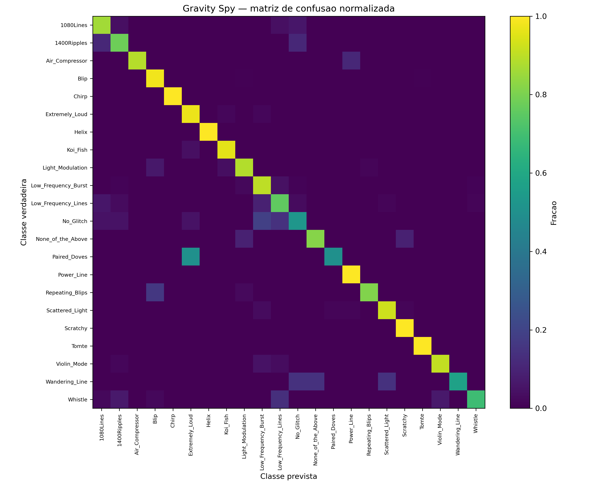